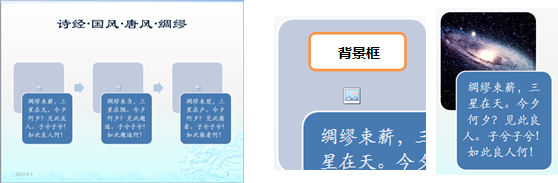
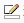
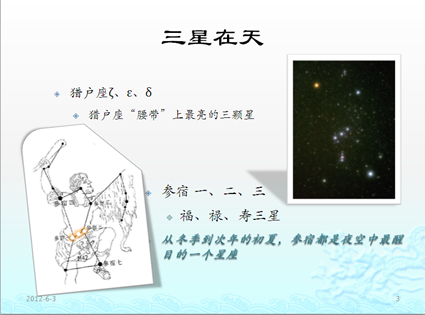
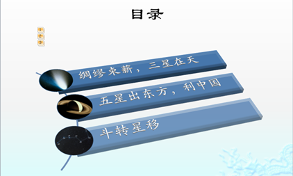

项目四 电子幻灯片
实验1 演示文稿的制作
一、实验目的
1．
掌握PowerPoint运行方式和幻灯片制作的基本知识；
2．
掌握PowerPoint基本操作界面的组成、工作区的组成以及状态栏的作用，熟悉常用工具栏、格式工具栏和绘图工具栏使用方法；
3．
掌握插入图片对象、插入日期时间和页面的方法；
4．
掌握选择“应用设计模板”和“页面模板”的方法；
5．
掌握幻灯片制作放映过程。
二、实验内容
1．
根据主题建立空演示文稿；
2．
设置幻灯片母版版式，字体，插入页码、日期；
3. 为幻灯片加入文字，SmartArt图形与图片
4. 设置动画。
5．
设置放映方式，插入音频。
三、实验步骤
1． 创建空白演示文稿。打开PowerPoint2010，将功能区切换到“文件”选项卡，点击“新建”命令，在出现的窗格中单击“主题”，选中名为“龙腾四海”(2016版本选择“主要事件”)，在最右侧的窗格中会出现选中的模板封面，单击封面下的“创建”按钮，创建新演示文稿。
2. 设置幻灯片母版。
1） 将功能区切换到“视图”选项卡，点击“母版视图”选项组的“幻灯片母版”按钮，进入母版编辑模式。在工作界面左侧的窗格中显示出演示文稿可用的所有版式。
2） 鼠标单击选中第一张版式，将它显示在工作界面右侧的窗格中。将功能区切换到“开始”选项卡，单击名为“单击此处编辑母版标题样式”的文本框，点击“段落”选项组右下方箭头 ，弹出 “段落”对话框。在“间距”组中设置“段前”12磅，“行距”为“多倍行距”，值1.2行。其他使用默认设置。
，弹出 “段落”对话框。在“间距”组中设置“段前”12磅，“行距”为“多倍行距”，值1.2行。其他使用默认设置。
3） 右键点击“单击此处编辑母版文本样式”文本框，在快捷菜单中选中“设置形状格式”，弹出“设置形状格式”对话框。点击对话框左侧列表中的“文本框”项，将“垂直对齐方式”设为“中部对齐”，其他使用默认设置。
4） 切换到功能区中的“插入”选项卡，在“文本”选项组中按下“日期和时间”按钮，弹出“页眉和页脚”对话框，在“幻灯片”选项卡中勾选“日期和时间”， “幻灯片编号”以及“标题幻灯片中不显示”。“日期和时间”设为“自动更新”，“语言”为“中国”。按下“全部应用”按钮关闭对话框。
5） 切换到功能区中的“幻灯片母版”选项卡，点击“关闭母版视图”按钮，完成幻灯片母版设置，回到幻灯片编辑模式。
3. 使用标题幻灯片。工作界面右侧的幻灯片为标题幻灯片。在标题框中输入文字“天上所有的星”，在副标题框中输入“中国古代天文常识”。将功能区切换到“开始”选项卡，使用
“字体”选项组中字体颜色命令，将副标题字体颜色改为“紫色，强调文字颜色5，深色25%”；在“段落”选项组中设置对齐方式为“居中”。
4. 添加新幻灯片到演示文稿中并输入文字。
1）按下“幻灯片”选项组的“新建幻灯片”按钮，在下拉表中选择“标题和内容”版式。添加新幻灯片，编号为2.
2） 在标题框中输入文字“诗经・国风・唐风・绸缪”。
3） 在内容框中输入三段文字如下：
绸缪束薪，三星在天。今夕何夕？见此良人。子兮子兮！如此良人何！
绸缪束刍，三星在隅。今夕何夕？见此邂逅。子兮子兮！如此邂逅何！
绸缪束楚，三星在户。今夕何夕？见此粲者。子兮子兮！如此粲者何！
5. 将内容框文字转化为SmartArt图形。
1）单击内容框的边框线，在“段落”选项组中按下“转换为SmartArt”按钮，选中“其他SmartArt图形”，弹出“选择SmartArt图形”对话框。在对话框左侧类型列表中选择“流程”，在右侧布局中选择“图片重点流程”，点击“确定”。结果如图2所示。
|
 |
图1 文本转换后的SmartArt图形 图2 在背景框中添加图像背景
2）点击如图2所示流程图背景框内的图片图标，弹出“插入图片”对话框，浏览选中图片“仙女座.jpg”。使用相同方法为余下流程图添加背景“星团.jpg”“人马座星云.jpg”，完成后如图3所示。
3） 点击SmartArt图形边框，将功能区切换到“SmartArt工具设计”选项卡，点击展开“SmartArt样式”选项组中的样式框，在下拉框中选择“三维”样式， “平面场景”。
4） 点击流程图形间的灰蓝色箭头，将功能区切换到“开始”选项卡，按下“绘图”选项组中“形状填充”按钮，选中“无填充颜色”；按下 “形状轮廓”按钮，选中“无轮廓”。箭头变得不可见。重复相同操作，让另一个箭头也不可见。
5）完成后如图4所示。
|
|

图3 三维样式的SmartArt图形
6. 为SmartArt图形设置动画效果。
1） 点击选中SmartArt图形，将功能区切换到“动画”选项卡，点击展开“动画”选项组的样式框，在下拉框中点击“更多进入效果”选项，在弹出的“更多进入效果”对话框中选择“温和型”-“翻转式由远及近”。
2） 点击“动画”选项组右下方箭头，弹出“翻转式由远及近”对话框。在“计时“选项卡中设置 “延迟”-4秒，“期间”-中速（2秒），“重复”-无。在“SmartArt动画”选项卡中设置“组合图形”-逐个（2016版本选择）。其他使用默认设置。
3） 在“动画”选项卡“计时”分组中单击“开始”下拉列表框，选择“单击时”。
4） 点击选中SmartArt图形，在“动画”选项卡“高级动画”分组中单击“动画窗格”命令，在弹出的动画窗格中，删除前面被隐藏的两个箭头所对应的动画条目。
7. 添加新幻灯片，版式为“两栏内容”。
1） 在标题框中输入文字“三星在天”；在第一栏内容框中输入一级文本“猎户座ζ、ε、δ”，二级文本“猎户座“腰带”上最亮的三颗星“；在第二栏内容框中输入一级文字“参宿
一、二、三”，二级文本“福、禄、寿三星”，一级文本“从冬季到次年的初夏，参宿都是夜空中最醒目的一个星座”。
2） 插入图片。切换到功能区中的“插入”选项卡，在“插图”选项组中点击“图片”按钮，插入图片“猎户座1.jpg”和“猎户座2.jpg”。将图片拖动适当位置。
3） 点击选中图片“猎户座1.jpg”，切换到功能区中的“图片工具格式”选项卡，在“图片样式”选项组中的外观样式表中选择样式“旋转，白色”。按下“大小”选项组的“裁剪”按钮，在下拉菜单中选中“裁剪为形状”->矩形：单圆角矩形。切换到功能区中的“开始”选项卡，
“绘图”选项组中选择“椭圆”，绘制3个圆形，按下“形状效果”按钮，设置“发光”->“发光变体”-橙色，11pt发光，强调颜色6。将圆形拖拽到图片的腰带部分，调整大小位置，覆盖住猎户座腰带上的星星。
4） 点击选中图片“猎户座2.jpg”，切换到功能区中的“图片工具格式”选项卡，在“图片样式”选项组中的外观样式表中选择样式“透视阴影，白色”。
5） 完成后如图4所示。
|
 |
图4 幻灯片“三星在天”
6）为图片和文字添加适当动画。
8. 在指定位置插入目录幻灯片并设置目录超链接。
1） 工作界面左侧为“幻灯片”浏览窗格，单击幻灯片1与幻灯片2之间空隙，出现闪烁黑色线条。切换到功能区中的“开始”选项卡，按下“幻灯片”选项组的“新建幻灯片”按钮，在下拉表中选择“标题和内容”版式。
2） 在标题框输入“目录”。在内容框中输入三段文字如下：
绸缪束薪，三星在天
五星出东方，利中国
斗转星移
3）将内容框转换为SmartArt图形，布局类型-“列表”，样式-“垂直曲形列表”。如图5所示
|
|
图5 SmartArt图形目录 图6 美化后的SmartArt图形目录
4） 点击第一行列表前的白色圆标，在“绘图”选项组中的“形状填充”中选择“图片”，插入图像 “彗星.jpg”,作为圆形的背景。
5） 使用相同方法为第二行列表前的白色圆形插入图像“土星.jpg”，第三行列表前的白色圆形插入图像“北斗七星.jpg”。完成后如图6所示。
6） 点击SmartArt图形边框，将功能区切换到“SmartArt工具设计”选项卡，点击SmartArt样式”选项组中“更改颜色”按钮，选中“强调文字颜色1”->“透明渐变范围”；展开SmartArt样式框，在下拉框中选择“三维”->鸟瞰场景。
7）为SmartArt目录设置动画，进入效果“浮入”，进入效果“浮入”，“效果选项”中选择“序列”下的-“逐个”，完成后如图7所示。
|
 |
图7 “鸟瞰场景”SmartArt图形目录
8) 创建目录超链接。鼠标右键点击第一行列表的图像圆标，在快捷菜单中点击“超链接”，弹出“插入超链接”对话框。点击对话框左侧“链接到”列表框中的“本文档中位置”，在中间“请选择文档中的位置”窗格中选中“幻灯片标题”->“3. 诗经・国风・唐风・绸缪”。完成后，在幻灯片放映时点击图标就会跳转至目的幻灯片。
9. 在目录幻灯片中创建访问每个主题的超链接，并在每个主题的最后一张幻灯片添加超链接返回目录幻灯片。
10. 设置自动放映，并添加背景音乐。
① 设置演示文稿中所有幻灯片为自动放映。选中任意一张幻灯片，切换功能区到“切换”选项卡，设置幻灯片自动放映细节。在“切换到此幻灯片”选项组中选择
“华丽型”->“涡流”。在“计时”选项组选择将幻灯片“换片方式”勾选为“设置自动换片时间”，换片时间为：00:04:00；“声音”选项选择”无声音”， 点击“全部应用”按钮，让演示文稿中所有幻灯片都使用这些设置。
② 在标题幻灯片中添加放映时的背景音乐。点击工作界面左侧“幻灯片”浏览窗格中的标题幻灯片，标题幻灯片出现在工作界面右侧的窗格中。在“切换”选项卡的“切换到此幻灯片”选项组中将“声音”选项改选为”其他声音”，弹出“添加音频”对话框，添加格式wav的音频“忆故人.wav”，添加成功后再勾选 “声音”下拉菜单项“播放下一段声音之前一直循环”。
11 切换功能区到“幻灯片放映”选项卡，点击“从头开始放映”按钮，放映幻灯片。
12 存盘，保留结果。切换功能区到“文件”选项卡，选择“保存”命令，输入文件名“天上所有的星”。